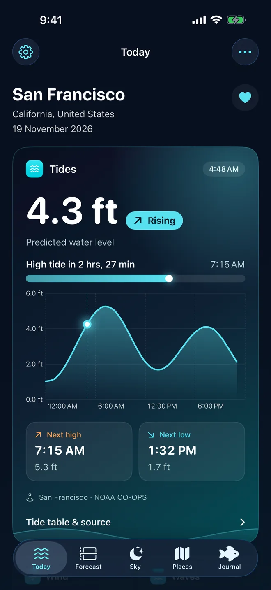
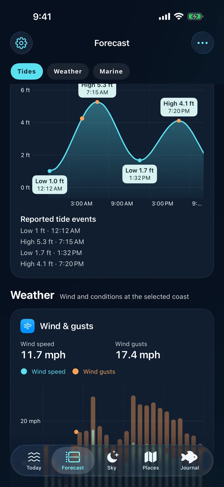
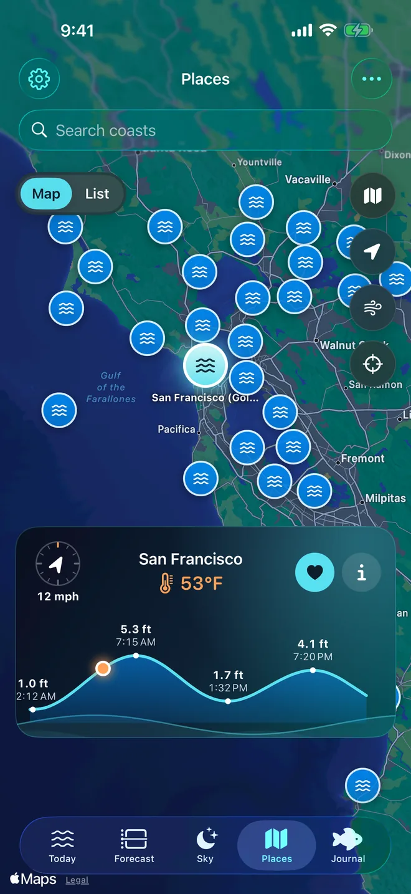
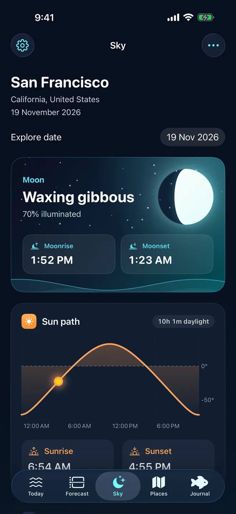
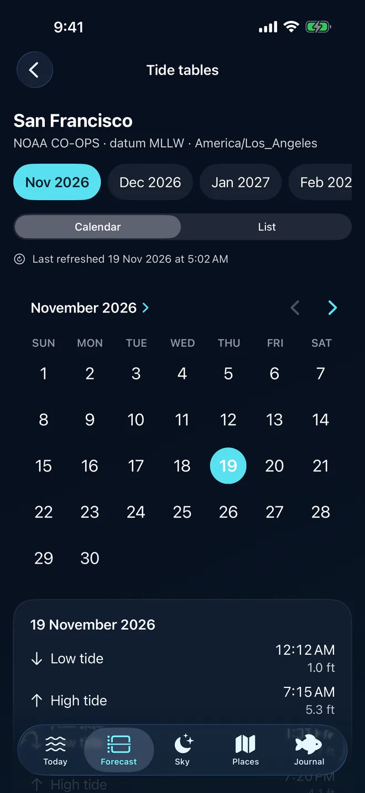

Tide times · Tide charts · Coastal weather
Know the tide before you go.
SeaWindow shows when the water turns, how high it gets and what the weather is doing on your coast: the tide curve, the next high and low, wind, waves, sun and moon, on one calm screen.
Free on iPhone · iOS 18 or later
No account, no ads
- NOAA tide predictions at more than 3,000 US stations
- Tides for coasts from Cornwall to Sydney, clearly sourced
- Today’s tide, charts and one favorite coast are free




Real app screensLive NOAA data, 19 Nov 2026
- 3,100+NOAA tide stations
- Worldwidestations and a global model
- Hourlywind, rain, UV and pressure
- No accountno ads, no tracking
What you get
Everything the coast is doing, in one place.
Open the app and you know whether the tide is coming in or going out, when it turns, and what the wind and water will be like when you get there.
Today
Rising or falling, and when it turns.
The water level right now, the curve for the whole day and a countdown to the next high or low tide, for the coast you picked.
- Next high and next low with times and heights
- The station behind every number, its distance and its source
- Wind, air and sea temperature, waves or pressure on the same screen
- Feet or metres, your choice in Settings
Forecast
Every chart, one swipe away.
The Forecast tab lays out every chart for your coast: the tide with each high and low marked, then wind and gusts, rain, pressure, UV, air temperature, waves and swell.
- Jump between Tides, Weather and Marine
- Lines or bars, hour by hour
- Today is free; Pro shows all ten days Pro
Places
The tide station nearest your beach.
Tide stations on a map. Tap a pin to see its tide curve, wind and air temperature, or search for any coast and save the ones you return to.
- Search towns, beaches and harbours
- If a spot has no tides, SeaWindow picks the nearest station and tells you
- One favorite free, as many as you like with Pro
Sky
Moon phase, sunrise and sunset.
The moon drives the tides, so SeaWindow shows it properly: phase and illumination, moonrise and moonset, the sun’s path, daylight and estimated solunar windows.
- Sunrise, sunset and hours of daylight
- Moonrise, moonset and how much of the moon is lit
- Any date, past or future, with Pro Pro
Tide tables Pro
Every high and low, month by month.
A calendar of the whole month’s tides for your station, with the datum and time zone printed at the top, so you can plan a trip weeks ahead.
- Calendar or list view
- Station, datum (such as MLLW) and time zone shown
- Plan up to a year ahead

Beyond the app
The tide, wherever you look.
On your Home Screen, Lock Screen and wrist, and ready when there is no signal.
Widgets
Current tide, tide chart, tide table, wind, weather, sun, moon and a large dashboard. The current-tide widget is free.
Apple Watch
The tide on your wrist, with complications for your watch face. Pro
Live Activities
Follow the next high or low on your Lock Screen and in the Dynamic Island. Pro
Condition alerts
Local reminders for tide, wind and weather on your favorite coasts. Pro
Offline forecasts
Download a forecast pack before you lose signal on the water. Pro
Catch journal
Save a catch, the spot and the tide and weather at that moment. Ten entries free, every entry with Pro.
Made for the water’s edge
Plan around the tide, whatever brings you to the coast.
Free and Pro
Free for today. Pro for the days ahead.
Download SeaWindow free and use it every day. Upgrade only if you want to plan further out.
Free
Everything you need for today.
- Today’s tide curve, next high and next low
- Today’s weather, waves and every chart for today
- Sunrise, sunset and moon phase for today
- Tide-station map and search
- One favorite coast and the current-tide widget
- Catch journal, up to 10 entries
SeaWindow Pro
Ten days of your coast, and every tool.
- 10-day tide forecast and every chart for all ten days
- Annual tide tables, month by month
- Sun and moon on any date, with solunar windows
- Unlimited favorites and catch journal
- Condition alerts and offline forecasts
- All widgets, Live Activities and Apple Watch
Pro is a weekly, monthly or yearly subscription. The price for your country is shown in the app before you subscribe, and new subscribers may be offered a free trial. Cancel anytime in your App Store settings.
Where the numbers come from
Real stations. Clear sources.
Every tide in SeaWindow names its station, its distance and its provider. When a number is a model estimate, the app says so.
Learn the tide
Free tide guides and tools.
Written by SeaWindow’s developer from NOAA sources and worked examples, for anyone planning time on the coast.
Tide height calculator
Water height at any time between a high and a low, or when the tide reaches the height you need. Rule of twelfths and cosine compared.
Open the calculator → GuideHow to read a tide chart
Time, height, highs and lows, and the datum behind every number, with a worked NOAA example from San Francisco.
Read the guide →Questions
Frequently asked questions
Is SeaWindow free?
Yes. SeaWindow is free to download and shows today’s tide curve, the next high and low, today’s weather and charts, sun and moon times, one favorite coast and a current-tide widget at no cost. SeaWindow Pro is an optional weekly, monthly or yearly subscription that adds ten days ahead, annual tide tables, alerts, offline forecasts, all widgets and Apple Watch.
Does SeaWindow work outside the United States?
Yes. In the US it uses NOAA predictions. Elsewhere it calculates tides on the iPhone from open international tide-station data or uses WorldTides predictions, and where no station is near, it uses the EOT20 global tide model and labels the result as an estimate. Places far up an estuary or inland have no tide data.
Where do SeaWindow’s tide times come from?
US tide times are NOAA CO-OPS predictions for the station shown on screen. Outside the US they come from open tide-station constants calculated on the device, from WorldTides, or from the EOT20 model. The app shows the station, its distance, the provider and the datum for every coast.
Does SeaWindow have widgets and an Apple Watch app?
Yes. The current-tide widget is free. SeaWindow Pro unlocks the other widgets (tide chart, tide table, wind, weather, sun, moon and a large dashboard), Live Activities and the Apple Watch app with complications.
Can I use SeaWindow without a signal?
SeaWindow keeps the last forecast it loaded. With Pro you can download an offline forecast pack for a favorite coast before you head out; expired packs stay clearly labelled until you replace them.
Do I need an account? Does SeaWindow track me?
No account is needed, and there are no ads, analytics or tracking. Your places and journal stay on your iPhone. Location is optional and only used to suggest a nearby coast.
Can I use SeaWindow for navigation?
No. SeaWindow is a planning aid. Tide predictions do not include storm surge, wind set-up or river flow. For navigation and safety, use official charts, marine forecasts and warnings.
Is SeaWindow available on iPad or Android?
SeaWindow is made for iPhone with iOS 18 or later, with an Apple Watch app. There is no Android version.
Your coast, one glance away.
Download SeaWindow and see today’s tide, the next turn and the weather on the water in seconds.
Free on iPhone · iOS 18 or later
No account, no ads